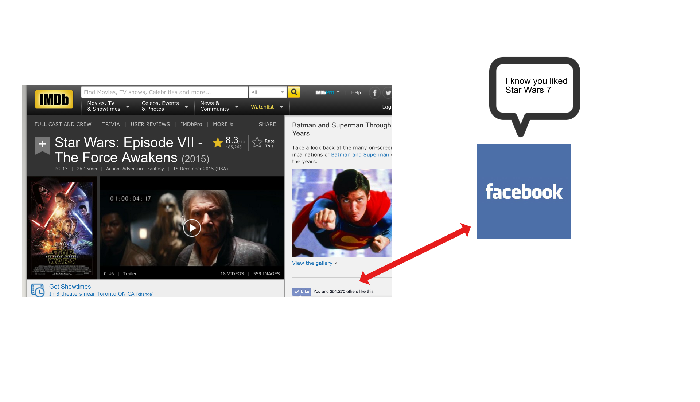

Cookie!
What are cookies?
Cookies are small files that are stored on a computer. The purpose is to hold some amount of data that is specific to a client and website. They are accessible from the server and the client side.
e.g. Jill visits NewYorkTimes.com to read news articles. When she visits the website for the first time, NewYorkTimes will store a cookie on Jill's browser. Every time Jill clicks on a link to read an article on NewYorkTimes, her browser sends the cookie back to the server hosting NewYorkTimes. Since this cookie serves as Jill's unique identifier, NewYorkTimes knows what articles Jill is interested in reading."

Script!
What is script?
Scripts operates in response to click request that is made by user. Generally companies that make huge amount of money from advertisement uses script tracking like Google, Facebook etc.
e.g. Bob signed into Facebook and visited a website that contains a Facebook like button (Social media tracking part gives some information about buttons like this.), Facebook knows that Bob visited that website and Bob’s identity because Facebook stored a cookie when he logged in.
Fingerprinting!
What is Fingerprinting?
Fingerprinting(is also called digital fingerprint) your machine works the same as getting your fingerprint. Your machine's fingerprint is almost unique among billions of devices, and can be used to recognize it when you are browsing the web, at every page that you 'touch'.
e.g. Eve visits a website, and it immediately takes her device fingerprint. This way the website can find Eve's browsing habits or they can assess statistics based on traffic flow.
Geo-Location!
What is Geo-Location?
Geo-Location tracking is the identification of the real geographic location of someone or something. It even includes the longtitude and the latitude of the user.
e.g. Josh decided to buy a car and visits websites such as autotrade or cargurus. To find cars in his location he allowed those websites to find his geo-location, by clicking “allow” on the pop up that appeared on Google Chrome. Then he visits Facebook and sees that Facebook shows him advertisements on his home page about cars that are for sale and close to his location. The reason Facebook can show the cars in his location is that he allowed the geo-location on the websites he visited and tracked his location and preferences.
Social Media!
What is social media tracking? Social media tracking is an active monitoring of social media channels such as Facebook, Twitter, wikis, blogs, media sharing, forums, message boards etc. e.g. Dave was waiting at the airport and posted a complaint on Twitter and added a # with the company name, flight company wrote under his Tweet and asked for the flight number to give extra information. With this way the Flight company tracked him on social media.
